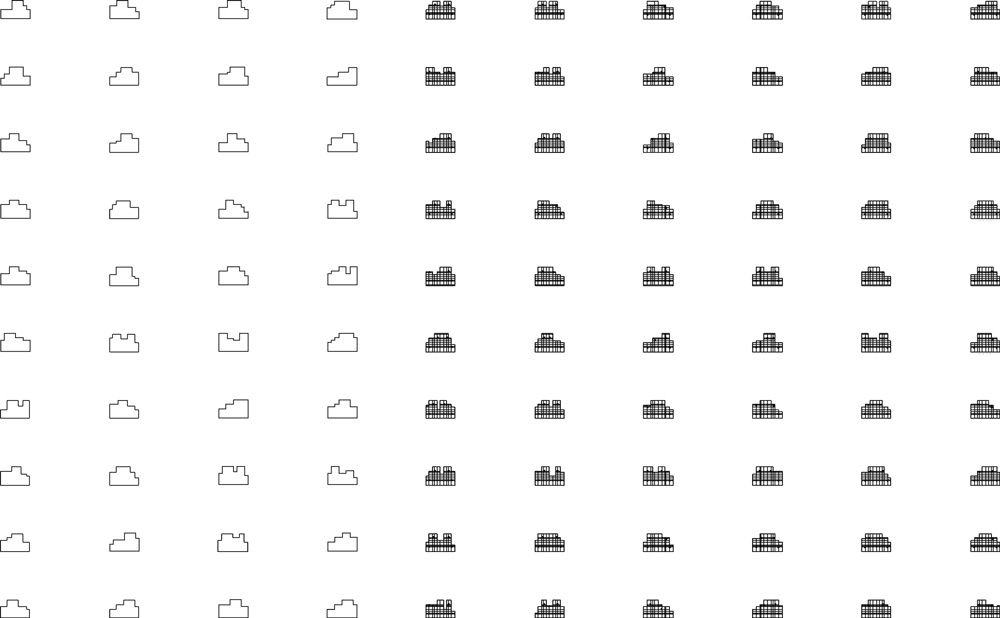
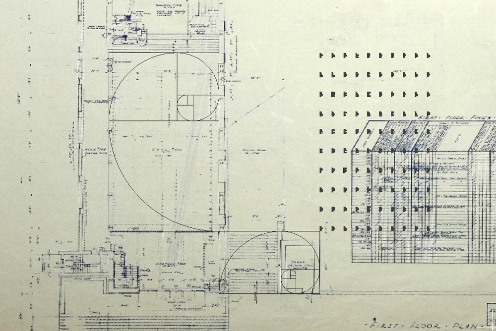

This is a caption
100 Variations is an installation by designer Jonathan Nesci at Eliel Saarinen's First Christian Church in Colombus, Indiana. The installation celebrates the legacy of architect Eliel Saarinen with new reflections on the Golden Ratio.
Nesci—an internationally exhibited designer—created 100 unique occasional tables by using the same geometric principles Saarinen used in the early 1940s to design the church. Each table boasts a highly polished surface. When they are installed in the church courtyard, their mirror-like finish will pay homage to the reflecting pool which once stood in the courtyard
Two quantities obey the golden rule if their ratio is the same or larger than their sum to the larger of the two quantities. Nesci's disciplined adherence to this logic is reflected in the construction of each individual table, which use variations of golden ratio pairs to define their form.
This is a caption
This is a caption
The Finnish architect Eliel Saarinen is best remembered for his art deco buildings of the early 20th Century. Saarinen was educated in Helsinki, and established his practice in the United States in the late 1920s, punctuating the American skyline with forms like the impressive JPMorgan Chase building in Houston and the disciplened First Christian Church in Indiana. Saarinen extended his influence in architecture as a professor at the Cranbrook Academy of Art and the University of Michigan. His colloborations with students like Charles and Ray Eames had a strong influence on furniture design for decades to come. Saarinen's son, Eero Saarinen, bacame the leader of International Style and one of the most important 20th Century architects in America. In 1947, Eliel Saarinen received an AIG Gold Medal in recognition for his work.